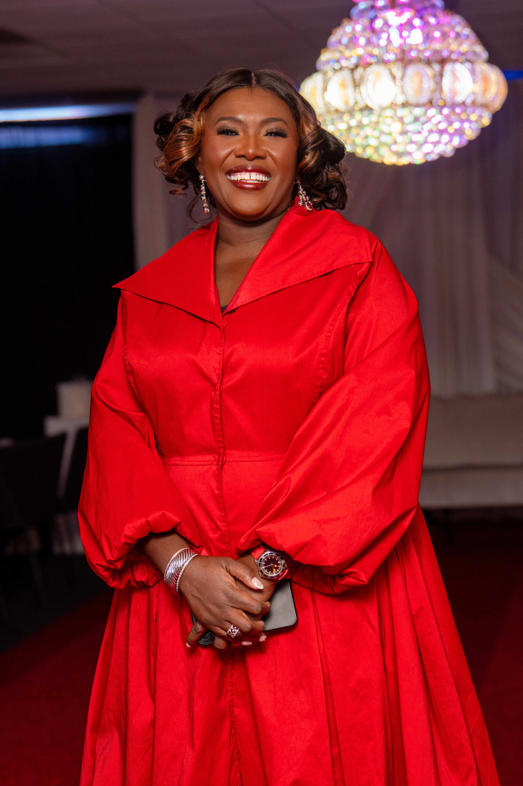
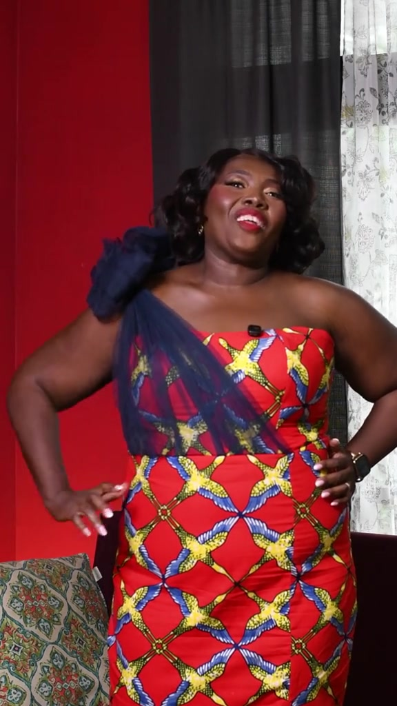
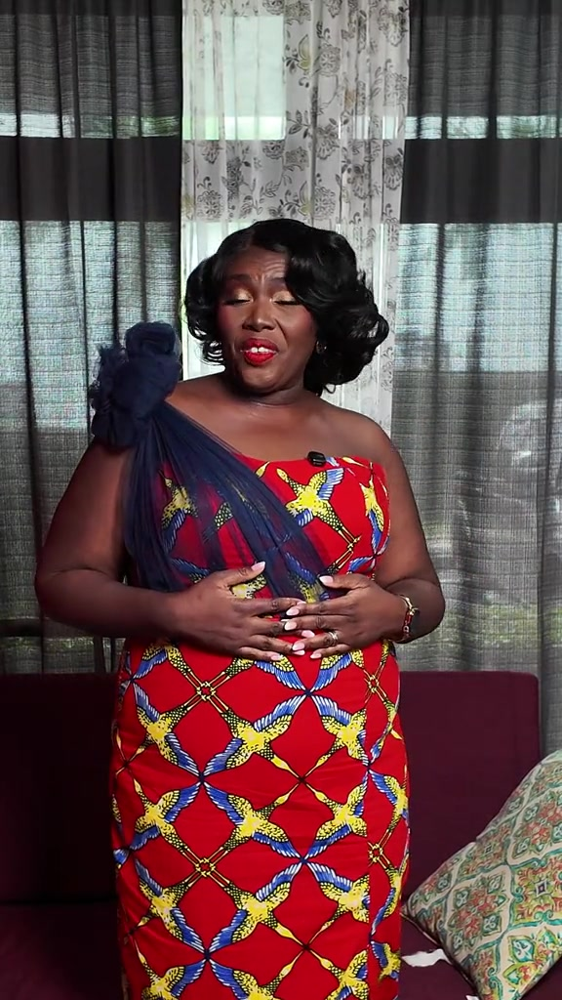
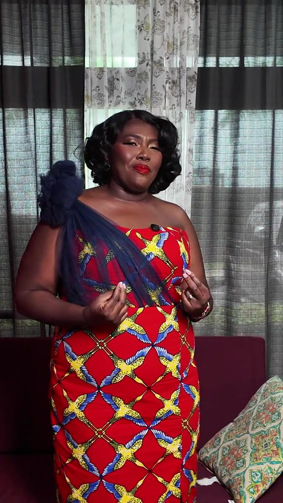

01
Operations & Strategy
Turning ideas into systems, teams and execution with an operator’s eye for clarity and accountability.
Francisca Boateng is an operations leader, founder, speaker and executive coach whose work connects business discipline with practical access to technology, leadership and opportunity.

Her career spans operations, cybersecurity education, philanthropy, speaking and entrepreneurship. The common thread is simple: build structures that help people move forward.
Turning ideas into systems, teams and execution with an operator’s eye for clarity and accountability.
Creating practical pathways into digital skills and cybersecurity for women and underserved communities.
Conversations about leadership, confidence, reinvention, purpose and building a career without losing yourself.
Francisca’s public voice is strongest when it is personal, practical and grounded. She writes about leadership, faith, family, work, confidence and the messy middle between ambition and real life.
Selected recent recognition across cybersecurity, technology community building and leadership.
Nominated for the Women in Tech Community Award.
Named by the Security Industry Association among its 2026 Power 100 honorees.
Recognized for work supporting a more diverse and inclusive cybersecurity workforce.
A dedicated shop for statement pieces, occasion looks and custom orders. Add to bag, check out securely, or request a custom fit.
Shop Odo’s Closet


Leadership, style, community and technology live in the same ecosystem. The website now makes those paths easy to understand and easy to enter.